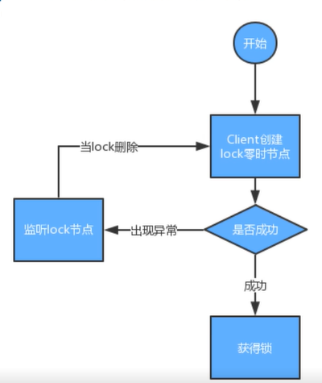

Zookeeper
Zookeeper是什么
它是一个分布式服务框架，是Apache Hadoop 的一个子项目，它主要是用来解决分布式应用中经常遇到的一些数据管理问题，如：统一命名服务、状态同步服务、集群管理、分布式应用配置项的管理等。
上面的解释有点抽象，简单来说zookeeper=文件系统+监听通知机制。
zookeeper 在底层其实只提供了两个功能
- 管理(存储，读取)用户程序提交的数据
- 并为用户程序提供数据节点监听服务
文件系统
Zookeeper 维护一个类似文件系统的数据结构
每个子目录项如 NameService 都被称作为 znode(目录节点)，和文件系统一样，我们能够自由的增加、删除znode，在一个znode下增加、删除子znode，唯一的不同在于znode是可以存储数据的。
有四种类型的znode：
- PERSISTENT-持久化目录节点
客户端与zookeeper断开连接后，该节点依旧存在 - PERSISTENT_SEQUENTIAL-持久化顺序编号目录节点
客户端与zookeeper断开连接后，该节点依旧存在，只是Zookeeper给该节点名称进行顺序编号 - EPHEMERAL-临时目录节点
客户端与zookeeper断开连接后，该节点被删除 - EPHEMERAL_SEQUENTIAL-临时顺序编号目录节点
客户端与zookeeper断开连接后，该节点被删除，只是Zookeeper给该节点名称进行顺序编号
监听通知机制
客户端注册监听它关心的目录节点，当目录节点发生变化（数据改变、被删除、子目录节点增加删除）时，zookeeper会通知客户端。
zookeeper 基于异常的分布式锁
临时节点

他会监听节点
zookeeper 基于相互监听
临时有序节点
原文作者: edxuanlen
原文链接: https://edxuanlen.tk/2020/03/17/Zookeeper/
版权声明: 转载请注明出处(必须保留作者署名及链接)